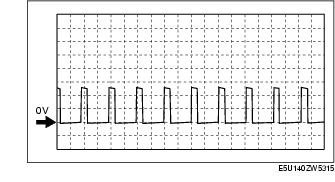

Workshop Manual ➭ ENGINE ➭ CONTROL SYSTEM[L8, LF] ➭ PCM INSPECTION [L8, LF]
PCM INSPECTION [L8, LF]
id0140i7802500
{: #wp1058563}
Not Using the M-MDS
*Note*{: #wp1058574}
• The PCM terminal voltage can vary with the conditions when measuring and changes due to aged deterioration on the vehicle, causing false diagnosis. Therefore determine comprehensively where the malfunction occurs among the input systems, output systems, and the PCM.

|
Signal {: #wp1058792} |
Connected to {: #wp1058794} |
Test condition {: #wp1058796} |
Voltage (V) {: #wp1058800} |
Inspection item {: #wp1058802} |
||
|---|---|---|---|---|---|---|
|
1A {: #wp1058612} |
|
|
|
|
|
|
|
1B {: #wp1058837} |
Starter relay control {: #wp1058840} |
Starter relay {: #wp1058843} |
Under any condition {: #wp1058846} |
Below 1.0 {: #wp1058852} |
• Starter relay {: #wp1058855} • Related wiring harness {: #wp1059091} |
|
|
1C {: #wp1058859} |
|
|
|
|
|
|
|
1D*2 {: #wp1058881} |
Clutch operation {: #wp1058884} |
CPP switch {: #wp1058887} |
Clutch pedal depressed {: #wp1058890} |
Below 1.0 {: #wp1058896} |
• CPP switch {: #wp1058899} • Related wiring harness {: #wp1059180} |
|
|
Clutch pedal released {: #wp1058912} |
B+ {: #wp1058918} |
|||||
|
1E {: #wp1058925} |
|
|
|
|
|
|
|
1F {: #wp1058947} |
|
|
|
|
|
|
|
1G {: #wp1058969} |
|
|
|
|
|
|
|
1H {: #wp1059293} |
Fuel pump control {: #wp1059296} |
Fuel pump relay {: #wp1059299} |
Ignition switch is turned to the ON position (Engine off) and a certain period has elapsed {: #wp1059302} |
B+ {: #wp1059308} |
• Fuel pump relay {: #wp1059311} • Related wiring harness {: #wp1059407} |
|
|
Cranking {: #wp1059347} |
Below 1.0 {: #wp1059353} |
|||||
|
Idle {: #wp1059325} |
Below 1.0 {: #wp1059331} |
|||||
|
1I {: #wp1059437} |
A/C {: #wp1059440} |
A/C relay {: #wp1059443} |
Engine running {: #wp1059446} |
A/C operating {: #wp1059449} |
Below 1.0 {: #wp1059452} |
• A/C relay {: #wp1059455} • Related wiring harness {: #wp1059541} |
|
A/C not operating {: #wp1059472} |
B+ {: #wp1059475} |
|||||
|
1J {: #wp1059562} |
Refrigerant pressure switch (middle) {: #wp1059565} |
Refrigerant pressure switch (middle) {: #wp1059568} |
Refrigerant pressure is more than the specification. (Refrigerant pressure switch (middle) is on.) {: #wp1059571} |
Below 1.0 {: #wp1059577} |
• Refrigerant pressure switch (middle) {: #wp1059580} • Related wiring harness {: #wp1059653} |
|
|
Refrigerant pressure is less than the specification. (Refrigerant pressure switch (middle) is off.) {: #wp1059594} |
B+ {: #wp1059600} |
|||||
|
1K {: #wp1059673} |
|
|
|
|
|
|
|
1L {: #wp1059727} |
|
|
|
|
|
|
|
1M {: #wp1059781} |
Cooling fan control {: #wp1059784} |
Cooling fan relay No.1 {: #wp1059787} |
During test mode*3 {: #wp1059790} |
Accelerator pedal released {: #wp1059793} |
B+ {: #wp1059796} |
• Cooling fan relay No.1 {: #wp1059799} • Related wiring harness {: #wp1059886} |
|
Accelerator pedal depressed {: #wp1059816} |
Below 1.0 {: #wp1059819} |
|||||
|
1N {: #wp1059904} |
Cooling fan control {: #wp1059907} |
Cooling fan relay No.2 {: #wp1059910} |
During test mode*3 {: #wp1059913} |
Accelerator pedal released {: #wp1059916} |
B+ {: #wp1059919} |
• Cooling fan relay No.2 {: #wp1059922} • Related wiring harness {: #wp1060016} |
|
Accelerator pedal depressed {: #wp1059940} |
Below 1.0 {: #wp1059943} |
|||||
|
1O {: #wp1060034} |
|
|
|
|
|
|
|
1P {: #wp1060092} |
MAF sensor ground {: #wp1060095} |
MAF sensor {: #wp1060098} |
Under any condition {: #wp1060101} |
Below 1.0 {: #wp1060107} |
• Related wiring harness {: #wp1060110} |
|
|
1Q {: #wp1060158} |
Main relay control {: #wp1060161} |
Main relay {: #wp1060164} |
Ignition switch is turned to the ON position {: #wp1060167} |
Below 1.0 {: #wp1060173} |
• Main relay {: #wp1060176} • Related wiring harness {: #wp1060263} |
|
|
Ignition switch off and a certain period has elapsed {: #wp1060192} |
B+ {: #wp1060198} |
|||||
|
1R {: #wp1060285} |
Cooling fan control {: #wp1060288} |
Cooling fan relay No.3 {: #wp1060291} |
During test mode*3 {: #wp1060294} |
Accelerator pedal released {: #wp1060297} |
B+ {: #wp1060300} |
• Cooling fan relay No.3 {: #wp1060303} • Related wiring harness {: #wp1060404} |
|
Accelerator pedal depressed {: #wp1060322} |
Below 1.0 {: #wp1060325} |
|||||
|
1S {: #wp1060422} |
|
|
|
|
|
|
|
1T {: #wp1060482} |
|
|
|
|
|
|
|
1U {: #wp1060542} |
|
|
|
|
|
|
|
1V {: #wp1060602} |
|
|
|
|
|
|
|
1W {: #wp1060662} |
|
|
|
|
|
|
|
1X {: #wp1060722} |
*2Neutral position {: #wp1060725} |
Neutral switch {: #wp1060728} |
Shift lever is at neutral position {: #wp1060731} |
Below 1.0 {: #wp1060737} |
• Neutral switch {: #wp1060740} • Related wiring harness {: #wp1060893} |
|
|
Shift lever is not at neutral position {: #wp1060801} |
B+ {: #wp1060807} |
|||||
|
*1Selector lever position {: #wp1060773} |
TR switch {: #wp1060776} |
Ignition switch is turned to the ON position {: #wp1060779} |
P, N position {: #wp1060782} |
Below 1.0 {: #wp1060785} |
• TR switch {: #wp1060788} • Related wiring harness {: #wp1060997} |
|
|
Except above {: #wp1060760} |
B+ {: #wp1060763} |
|||||
|
1Y {: #wp1061016} |
|
|
|
|
|
|
|
1Z {: #wp1061084} |
|
|
|
|
|
|
|
1AA {: #wp1061152} |
|
|
|
|
|
|
|
1AB {: #wp1061220} |
Brake switch No.1 {: #wp1061223} |
Brake switch {: #wp1061226} |
Brake pedal depressed {: #wp1061229} |
B+ {: #wp1061235} |
• Brake switch {: #wp1061238} • Related wiring harness {: #wp1061361} |
|
|
Brake pedal released {: #wp1061259} |
Below 1.0 {: #wp1061265} |
|||||
|
1AC {: #wp1061387} |
|
|
|
|
|
|
|
1AD {: #wp1061455} |
|
|
|
|
|
|
|
1AE {: #wp1061523} |
|
|
|
|
|
|
|
1AF {: #wp1061591} |
Brake switch No.2 {: #wp1061594} |
Brake switch {: #wp1061597} |
Brake pedal depressed {: #wp1061600} |
B+ {: #wp1061606} |
• Brake switch {: #wp1061609} • Related wiring harness {: #wp1061732} |
|
|
Brake pedal released {: #wp1061630} |
Below 1.0 {: #wp1061636} |
|||||
|
1AG {: #wp1061758} |
|
|
|
|
|
|
|
1AH {: #wp1061826} |
|
|
|
|
|
|
|
1AI {: #wp1061894} |
CAN_L {: #wp1061897} |
CAN related module {: #wp1061900} |
Because this terminal is for CAN, no valid determination of terminal voltage is possible {: #wp1061903} |
• Related wiring harness {: #wp1061912} |
||
|
1AJ {: #wp1061967} |
APP sensor No.2 power supply {: #wp1061970} |
APP sensor {: #wp1061973} |
Ignition switch is turned to the ON position {: #wp1061976} |
Approx. 5.0 {: #wp1061982} |
• Related wiring harness {: #wp1061985} |
|
|
1AK {: #wp1062043} |
MAF {: #wp1062046} |
MAF sensor {: #wp1062049} |
Ignition switch is turned to the ON position {: #wp1062052} |
Approx. 0.7 {: #wp1062058} |
• MAF sensor {: #wp1062061} • Related wiring harness {: #wp1062183} |
|
|
Idle {: #wp1062082} |
Approx. 1.4 {: #wp1062088} |
|||||
|
1AL {: #wp1062209} |
APP sensor No.1 power supply {: #wp1062212} |
APP sensor {: #wp1062215} |
Ignition switch is turned to the ON position. {: #wp1062218} |
Approx. 5.0 {: #wp1062224} |
• Related wiring harness {: #wp1062227} |
|
|
1AM {: #wp1062285} |
CAN_H {: #wp1062288} |
CAN related module {: #wp1062291} |
Because this terminal is for CAN, no valid determination of terminal voltage is possible {: #wp1062294} |
• Related wiring harness {: #wp1062303} |
||
|
1AN {: #wp1062358} |
|
|
|
|
|
|
|
1AO {: #wp1062426} |
APP sensor No.1 {: #wp1062429} |
APP sensor {: #wp1062432} |
Ignition switch is turned to the ON position {: #wp1062435} |
Accelerator pedal depressed {: #wp1062438} |
Approx. 3.9 {: #wp1062441} |
• APP sensor {: #wp1062444} • Related wiring harness {: #wp1062571} |
|
Accelerator pedal released {: #wp1062468} |
Approx. 1.6 {: #wp1062471} |
|||||
|
1AP {: #wp1062589} |
APP sensor No.2 {: #wp1062592} |
APP sensor {: #wp1062595} |
Ignition switch is turned to the ON position {: #wp1062598} |
Accelerator pedal depressed {: #wp1062601} |
Approx. 3.4 {: #wp1062604} |
• APP sensor {: #wp1062607} • Related wiring harness {: #wp1062734} |
|
Accelerator pedal released {: #wp1062631} |
Approx. 1.0 {: #wp1062634} |
|||||
|
1AQ {: #wp1062752} |
Cruise control switch {: #wp1062755} |
Cruise control switch {: #wp1062758} |
Ignition switch is turned to the ON position {: #wp1062761} |
ON OFF switch pressed in {: #wp1062764} |
Approx. 0 {: #wp1062767} |
• Cruise control switch {: #wp1062770} • Related wiring harness {: #wp1062963} |
|
CANCEL switch pressed in {: #wp1062860} |
Approx. 1.1 {: #wp1062863} |
|||||
|
SET/- switch pressed in {: #wp1062838} |
Approx. 3.1 {: #wp1062841} |
|||||
|
RES/+ switch pressed in {: #wp1062816} |
Approx. 4.2 {: #wp1062819} |
|||||
|
Except above {: #wp1062794} |
Approx. 5.0 {: #wp1062797} |
|||||
|
1AR {: #wp1063017} |
Sensor ground {: #wp1063020} |
MAF/IAT sensor {: #wp1063023} |
Under any condition {: #wp1063026} |
Below 1.0 {: #wp1063032} |
• Related wiring harness {: #wp1063035} |
|
|
1AS {: #wp1063095} |
APP sensor No.1 ground {: #wp1063098} |
APP sensor {: #wp1063101} |
Under any condition {: #wp1063104} |
Below 1.0 {: #wp1063110} |
• Related wiring harness {: #wp1063113} |
|
|
1AT {: #wp1063171} |
IAT {: #wp1063174} |
MAF/IAT sensor {: #wp1063177} |
Ignition switch is turned to the ON position {: #wp1063180} |
IAT is 20 °C {68 °F} {: #wp1063183} |
Approx. 2.4 {: #wp1063186} |
• IAT sensor {: #wp1063189} • Related wiring harness {: #wp1063325} |
|
IAT is 60°C {140 °F} {: #wp1063213} |
Approx. 0.9 {: #wp1063216} |
|||||
|
1AU {: #wp1063350} |
Refrigerant pressure switch (high, low) {: #wp1063353} |
Refrigerant pressure switch (high, low) {: #wp1063356} |
Ignition switch is turned to the ON position {: #wp1063359} |
A/C operating {: #wp1063362} |
Below 1.0 {: #wp1063365} |
• Refrigerant pressure switch (high, low) {: #wp1063368} • Related wiring harness {: #wp1063497} |
|
A/C not operating {: #wp1063392} |
B+ {: #wp1063395} |
|||||
|
1AV {: #wp1063518} |
APP sensor No.2 ground {: #wp1063521} |
APP sensor {: #wp1063524} |
Under any condition {: #wp1063527} |
Below 1.0 {: #wp1063533} |
• Related wiring harness {: #wp1063536} |
|
|
1AW {: #wp1063594} |
B+ {: #wp1063597} |
Main relay {: #wp1063600} |
Ignition switch off {: #wp1063603} |
Below 1.0 {: #wp1063609} |
• Main relay {: #wp1063612} • Battery {: #wp1063743} • Related wiring harness {: #wp1063753} |
|
|
Ignition switch is turned to the ON position {: #wp1063633} |
B+ {: #wp1063639} |
|||||
|
1AX {: #wp1063781} |
Drive-by-wire relay control {: #wp1063784} |
Drive-by-wire relay {: #wp1063787} |
Under any condition {: #wp1063790} |
Below 1.0 {: #wp1063796} |
• Drive-by-wire relay {: #wp1063799} • Related wiring harness {: #wp1063867} |
|
|
1AY {: #wp1063875} |
Ignition switch on {: #wp1063878} |
Ignition switch {: #wp1063881} |
Ignition switch off {: #wp1063884} |
Below 1.0 {: #wp1063890} |
• Ignition switch {: #wp1063893} • Related wiring harness {: #wp1064022} |
|
|
Ignition switch is turned to the ON position {: #wp1063915} |
B+ {: #wp1063921} |
|||||
|
1AZ {: #wp1064050} |
Ground {: #wp1064053} |
Ground {: #wp1064056} |
Under any condition {: #wp1064059} |
Below 1.0 {: #wp1064065} |
• Related wiring harness {: #wp1064068} |
|
|
1BA {: #wp1064128} |
Back-up power supply {: #wp1064131} |
Battery (positive terminal) {: #wp1064134} |
Under any condition {: #wp1064137} |
B+ {: #wp1064143} |
• Battery {: #wp1064146} • Related wiring harness {: #wp1064210} |
|
|
1BB {: #wp1064218} |
Ground {: #wp1064221} |
Ground {: #wp1064224} |
Under any condition {: #wp1064227} |
Below 1.0 {: #wp1064233} |
• Related wiring harness {: #wp1064236} |
|
|
1BC {: #wp1064296} |
|
|
|
|
|
|
|
1BD {: #wp1064366} |
Ground {: #wp1064369} |
Ground {: #wp1064372} |
Under any condition {: #wp1064375} |
Below 1.0 {: #wp1064381} |
• Related wiring harness {: #wp1064384} |
|
|
1BE {: #wp1064444} |
B+ {: #wp1064447} |
Main relay {: #wp1064450} |
Ignition switch off {: #wp1064453} |
Below 1.0 {: #wp1064459} |
• Main relay {: #wp1064462} • Related wiring harness {: #wp1064592} |
|
|
Ignition switch is turned to the ON position {: #wp1064484} |
B+ {: #wp1064490} |
|||||
|
1BF {: #wp1064620} |
Drive-by-wire relay control {: #wp1064623} |
Drive-by-wire relay {: #wp1064626} |
Ignition switch is turned to the ON position {: #wp1064629} |
Drive-by-wire system is malfunction {: #wp1064632} |
Below 1.0 {: #wp1064635} |
• Drive-by-wire relay {: #wp1064638} • Related wiring harness {: #wp1064780} |
|
Drive-by-wire system is normal {: #wp1064663} |
B+ {: #wp1064666} |
|||||
|
1BG {: #wp1064801} |
|
|
|
|
|
|
|
1BH {: #wp1064871} |
Ground {: #wp1064874} |
Ground {: #wp1064877} |
Under any condition {: #wp1064880} |
Below 1.0 {: #wp1064886} |
• Related wiring harness {: #wp1064889} |
|
|
2A {: #wp1064949} |
Throttle control (+) {: #wp1064952} |
Throttle body (Throttle valve actuator) {: #wp1064955} |
• Inspect using the wave profile. {: #wp1064958} (See Inspection Using An Oscilloscope (Reference).) {: #wp1065021} |
• Throttle valve actuator {: #wp1064967} • Related wiring harness {: #wp1065048} |
||
|
2B {: #wp1065056} |
Throttle control (-) {: #wp1065059} |
Throttle body (Throttle valve actuator) {: #wp1065062} |
• Inspect using the wave profile. {: #wp1065065} (See Inspection Using An Oscilloscope (Reference).) {: #wp1065132} |
• Throttle valve actuator {: #wp1065074} • Related wiring harness {: #wp1065159} |
||
|
2C {: #wp1065167} |
Purge control {: #wp1065170} |
Purge solenoid valve {: #wp1065173} |
• Inspect using the wave profile. {: #wp1065176} (See Inspection Using An Oscilloscope (Reference).) {: #wp1065245} |
• Purge solenoid valve {: #wp1065185} • Related wiring harness {: #wp1065272} |
||
|
2D {: #wp1065280} |
|
|
|
|
|
|
|
2E*4 {: #wp1065362} |
OCV control {: #wp1065365} |
OCV {: #wp1065368} |
• Inspect using the wave profile. {: #wp1065371} (See Inspection Using An Oscilloscope (Reference).) {: #wp1065452} |
• OCV {: #wp1065380} • Related wiring harness {: #wp1065479} |
||
|
2F {: #wp1065487} |
|
|
|
|
|
|
|
2G {: #wp1065575} |
EGR valve #2 coil control {: #wp1065578} |
EGR valve {: #wp1065581} (terminal A) {: #wp1065634} |
Idle (EGR control not operating) {: #wp1065584} |
B+ {: #wp1065590} |
• EGR valve {: #wp1065593} • Related wiring harness {: #wp1065682} |
|
|
2H {: #wp1065690} |
EGR valve #4 coil control {: #wp1065693} |
EGR valve {: #wp1065696} (terminal F) {: #wp1065749} |
Idle (EGR control not operating) {: #wp1065699} |
B+ {: #wp1065705} |
• EGR valve {: #wp1065708} • Related wiring harness {: #wp1065797} |
|
|
2I*5 {: #wp1065805} |
Variable tumble control {: #wp1065808} |
Variable tumble solenoid valve {: #wp1065811} |
ECT 60 °C {142 °F} or more and engine speed 3,750 rpm or more {: #wp1065814} |
B+ {: #wp1065820} |
• Variable tumble solenoid valve {: #wp1065823} • Related wiring harness {: #wp1066035} |
|
|
ECT less than 60 °C {142 °F} and engine speed less than 3,750 rpm {: #wp1065854} |
Below 1.0 {: #wp1065860} |
|||||
|
2J {: #wp1066080} |
Variable intake air control {: #wp1066083} |
Variable intake air solenoid valve {: #wp1066086} |
Ignition switch is turned to the ON position {: #wp1066089} |
Below 1.0 {: #wp1066095} |
• Variable intake air solenoid valve {: #wp1066098} • Related wiring harness {: #wp1066319} |
|
|
Engine speed: less than 4,750 rpm {: #wp1066152} |
Below 1.0 {: #wp1066158} |
|||||
|
Engine speed: 4,750 rpm or more {: #wp1066130} |
B+ {: #wp1066136} |
|||||
|
2K {: #wp1066386} |
EGR valve #1 coil control {: #wp1066389} |
EGR valve {: #wp1066392} (terminal E) {: #wp1066446} |
Idle (EGR control not operating) {: #wp1066395} |
Below 1.0 {: #wp1066401} |
• EGR valve {: #wp1066404} • Related wiring harness {: #wp1066494} |
|
|
2L {: #wp1066502} |
EGR valve #3 coil control {: #wp1066505} |
EGR valve {: #wp1066508} (terminal B) {: #wp1066562} |
Idle (EGR control not operating) {: #wp1066511} |
B+ {: #wp1066517} |
• EGR valve {: #wp1066520} • Related wiring harness {: #wp1066611} |
|
|
2M {: #wp1066619} |
|
|
|
|
|
|
|
2N {: #wp1066709} |
|
|
|
|
|
|
|
2O {: #wp1066799} |
|
|
|
|
|
|
|
2P {: #wp1066889} |
CMP sensor ground {: #wp1066892} |
CMP sensor {: #wp1066895} |
Under any condition {: #wp1066898} |
Below 1.0 {: #wp1066904} |
• Related wiring harness {: #wp1066907} |
|
|
2Q {: #wp1066987} |
HO2S {: #wp1066990} |
HO2S {: #wp1066993} |
Idle after warm-up {: #wp1066996} |
Alternates between 0 and 1.0 {: #wp1067002} |
• HO2S {: #wp1067005} • Related wiring harness {: #wp1067088} |
|
|
2R {: #wp1067096} |
|
|
|
|
|
|
|
2S {: #wp1067186} |
CMP {: #wp1067189} |
CMP sensor {: #wp1067192} |
• Inspect using the wave profile. {: #wp1067195} (See Inspection Using An Oscilloscope (Reference).) {: #wp1067276} |
• CMP sensor {: #wp1067204} • Related wiring harness {: #wp1067303} |
||
|
2T {: #wp1067311} |
Power steering pressure {: #wp1067314} |
PSP switch {: #wp1067317} |
Idle {: #wp1067320} |
Steering wheel at straight ahead position {: #wp1067323} |
B+ {: #wp1067326} |
• PSP switch {: #wp1067329} • Related wiring harness {: #wp1067548} |
|
While turning steering wheel {: #wp1067366} |
Below 1.0 {: #wp1067369} |
|||||
|
2U {: #wp1067566} |
Knocking (+) {: #wp1067569} |
KS {: #wp1067572} |
Ignition switch ON (Use digital type voltmeter, because measurement voltage will be detected less than true voltage when using analog type voltmeter) {: #wp1067575} |
Approx. 4.3 {: #wp1067581} |
• KS {: #wp1067584} • Related wiring harness {: #wp1067672} |
|
|
2V {: #wp1067680} |
Knocking (-) {: #wp1067683} |
KS {: #wp1067686} |
Ignition switch ON (Use digital type voltmeter, because measurement voltage will be detected less than true voltage when using analog type voltmeter) {: #wp1067689} |
Below 1.0 {: #wp1067695} |
• KS {: #wp1067698} • Related wiring harness {: #wp1067786} |
|
|
2W {: #wp1067794} |
CKP {: #wp1067797} |
CKP sensor {: #wp1067800} |
• Inspect using the wave profile. {: #wp1067803} (See Inspection Using An Oscilloscope (Reference).) {: #wp1067888} |
• CKP sensor {: #wp1067812} • Related wiring harness {: #wp1067915} |
||
|
2X {: #wp1067923} |
Ground {: #wp1067926} |
Shield wire {: #wp1067929} |
Under any condition {: #wp1067932} |
Below 1.0 {: #wp1067938} |
• Related wiring harness {: #wp1067941} |
|
|
2Y {: #wp1068029} |
|
|
|
|
|
|
|
2Z {: #wp1068127} |
A/F sensor {: #wp1068130} |
A/F sensor {: #wp1068133} |
Idle after warm-up {: #wp1068136} |
Approx. 2.4 {: #wp1068142} |
• A/F sensor {: #wp1068145} • Related wiring harness {: #wp1068242} |
|
|
2AA {: #wp1068250} |
|
|
|
|
|
|
|
2AB {: #wp1068348} |
CKP sensor ground {: #wp1068351} |
CKP sensor {: #wp1068354} |
Under any condition {: #wp1068357} |
Below 1.0 {: #wp1068363} |
• Related wiring harness {: #wp1068366} |
|
|
2AC {: #wp1068454} |
|
|
|
|
|
|
|
2AD {: #wp1068552} |
A/F sensor {: #wp1068555} |
A/F sensor {: #wp1068558} |
Idle after warm-up {: #wp1068561} |
Approx. 2.8 {: #wp1068567} |
• A/F sensor {: #wp1068570} • Related wiring harness {: #wp1068667} |
|
|
2AE {: #wp1068675} |
|
|
|
|
|
|
|
2AF {: #wp1068773} |
|
|
|
|
|
|
|
2AG {: #wp1068871} |
Manifold absolute pressure {: #wp1068874} |
MAP sensor {: #wp1068877} |
Ignition switch is turned to the ON position (at sea level) {: #wp1068880} |
Approx. 4.1 {: #wp1068886} |
• MAP sensor {: #wp1068889} • Related wiring harness {: #wp1069116} |
|
|
Idle {: #wp1068925} |
Approx. 1.2 {: #wp1068931} |
|||||
|
2AH {: #wp1069157} |
ECT {: #wp1069160} |
ECT sensor {: #wp1069163} |
Ignition switch is turned to the ON position {: #wp1069166} |
ECT is 20 °C {68 °F} {: #wp1069169} |
Approx. 3.0 {: #wp1069172} |
• ECT sensor {: #wp1069175} • Related wiring harness {: #wp1069414} |
|
ECT is 80 °C {176 °F} {: #wp1069214} |
Approx. 0.9 {: #wp1069217} |
|||||
|
2AI {: #wp1069439} |
Generator field coil control {: #wp1069442} |
Generator {: #wp1069445} (terminal D) {: #wp1069501} |
• Inspect using the wave profile. {: #wp1069448} (See Inspection Using An Oscilloscope (Reference).) {: #wp1069543} |
• Generator {: #wp1069457} • Related wiring harness {: #wp1069570} |
||
|
2AJ {: #wp1069578} |
Generator output voltage {: #wp1069581} |
Generator {: #wp1069584} (terminal P) {: #wp1069642} |
• Inspect using the wave profile. {: #wp1069587} (See Inspection Using An Oscilloscope (Reference).) {: #wp1069686} |
• Generator {: #wp1069596} • Related wiring harness {: #wp1069713} |
||
|
2AK {: #wp1069721} |
Throttle valve opening angle No. 1 {: #wp1069724} |
Throttle body (TP sensor) {: #wp1069727} |
Ignition switch is turned to the ON position {: #wp1069730} |
Accelerator pedal depressed {: #wp1069733} |
Approx. 4.5 {: #wp1069736} |
• TP sensor {: #wp1069739} • Related wiring harness {: #wp1069999} |
|
Accelerator pedal released {: #wp1069782} |
Approx. 0.5 {: #wp1069785} |
|||||
|
2AL {: #wp1070017} |
Throttle valve opening angle No. 2 {: #wp1070020} |
Throttle body (TP sensor) {: #wp1070023} |
Ignition switch is turned to the ON position {: #wp1070026} |
Accelerator pedal depressed {: #wp1070029} |
Approx. 0.5 {: #wp1070032} |
• TP sensor {: #wp1070035} • Related wiring harness {: #wp1070295} |
|
Accelerator pedal released {: #wp1070078} |
Approx. 4.5 {: #wp1070081} |
|||||
|
2AM {: #wp1070313} |
Constant voltage {: #wp1070316} |
CMP sensor {: #wp1070319} |
Ignition switch is turned to the ON position {: #wp1070322} |
B+ {: #wp1070328} |
• Related wiring harness {: #wp1070331} |
|
|
2AN {: #wp1070428} |
|
|
|
|
|
|
|
2AO {: #wp1070534} |
Constant voltage (Vref) {: #wp1070537} |
Throttle body (TP sensor) {: #wp1070540} |
Ignition switch is turned to the ON position {: #wp1070543} |
Approx. 5.0 {: #wp1070549} |
• Related wiring harness {: #wp1070552} |
|
|
2AP {: #wp1070648} |
Sensor ground {: #wp1070651} |
Throttle body (TP sensor) {: #wp1070654} |
Under any condition {: #wp1070657} |
Below 1.0 {: #wp1070663} |
• Related wiring harness {: #wp1070666} |
|
|
2AQ {: #wp1070762} |
Constant voltage {: #wp1070765} |
CKP sensor {: #wp1070768} |
Ignition switch is turned to the ON position {: #wp1070771} |
B+ {: #wp1070777} |
• Related wiring harness {: #wp1070780} |
|
|
2AR {: #wp1070877} |
|
|
|
|
|
|
|
2AS {: #wp1070983} |
|
|
|
|
|
|
|
2AT {: #wp1071089} |
IGT4 {: #wp1071092} |
Ignition coil (No.4 cylinders) {: #wp1071095} |
• Inspect using the wave profile. {: #wp1071098} (See Inspection Using An Oscilloscope (Reference).) {: #wp1071195} |
• Ignition coil No.4 {: #wp1071107} • Related wiring harness {: #wp1071222} |
||
|
2AU {: #wp1071230} |
Constant voltage (Vref) {: #wp1071233} |
MAP sensor {: #wp1071236} |
Ignition switch is turned to the ON position {: #wp1071239} |
Approx. 5.0 {: #wp1071245} |
• Related wiring harness {: #wp1071248} |
|
|
2AV {: #wp1071348} |
MAP sensor ground {: #wp1071351} |
MAP sensor {: #wp1071354} |
Under any condition {: #wp1071357} |
Below 1.0 {: #wp1071363} |
• Related wiring harness {: #wp1071366} |
|
|
2AW {: #wp1071466} |
IGT2 {: #wp1071469} |
Ignition coil (No.2 cylinders) {: #wp1071472} |
• Inspect using the wave profile. {: #wp1071475} (See Inspection Using An Oscilloscope (Reference).) {: #wp1071576} |
• Ignition coil No.2 {: #wp1071484} • Related wiring harness {: #wp1071603} |
||
|
2AX {: #wp1071611} |
IGT3 {: #wp1071614} |
Ignition coil (No.3 cylinders) {: #wp1071617} |
• Inspect using the wave profile. {: #wp1071620} (See Inspection Using An Oscilloscope (Reference).) {: #wp1071725} |
• Ignition coil No.3 {: #wp1071629} • Related wiring harness {: #wp1071752} |
||
|
2AY {: #wp1071760} |
ECT sensor ground {: #wp1071763} |
ECT sensor {: #wp1071766} |
Under any condition {: #wp1071769} |
Below 1.0 {: #wp1071775} |
• Related wiring harness {: #wp1071778} |
|
|
2AZ {: #wp1071886} |
Fuel injection (#4) {: #wp1071889} |
Fuel injector No.4 {: #wp1071892} |
• Inspect using the wave profile. {: #wp1071895} (See Inspection Using An Oscilloscope (Reference).) {: #wp1072006} |
• Fuel injector No.4 {: #wp1071904} • Related wiring harness {: #wp1072033} |
||
|
2BA {: #wp1072041} |
IGT1 {: #wp1072044} |
Ignition coil (No.1 cylinders) {: #wp1072047} |
• Inspect using the wave profile. {: #wp1072050} (See Inspection Using An Oscilloscope (Reference).) {: #wp1072163} |
• Ignition coil No.1 {: #wp1072059} • Related wiring harness {: #wp1072190} |
||
|
2BB {: #wp1072198} |
Fuel injection (#1) {: #wp1072201} |
Fuel injector No.1 {: #wp1072204} |
• Inspect using the wave profile. {: #wp1072207} (See Inspection Using An Oscilloscope (Reference).) {: #wp1072326} |
• Fuel injector No.1 {: #wp1072216} • Related wiring harness {: #wp1072353} |
||
|
2BC {: #wp1072361} |
Fuel injection (#2) {: #wp1072364} |
Fuel injector No.2 {: #wp1072367} |
• Inspect using the wave profile. {: #wp1072370} (See Inspection Using An Oscilloscope (Reference).) {: #wp1072493} |
• Fuel injector No.2 {: #wp1072379} • Related wiring harness {: #wp1072520} |
||
|
2BD {: #wp1072528} |
Fuel injection (#3) {: #wp1072531} |
Fuel injector No.3 {: #wp1072534} |
• Inspect using the wave profile. {: #wp1072537} (See Inspection Using An Oscilloscope (Reference).) {: #wp1072664} |
• Fuel injector No.3 {: #wp1072546} • Related wiring harness {: #wp1072691} |
||
|
2BE {: #wp1072699} |
HO2S heater control {: #wp1072702} |
HO2S heater {: #wp1072705} |
Heavy load (Heater control not operating) {: #wp1072708} |
B+ {: #wp1072714} |
• HO2S heater {: #wp1072717} • Related wiring harness {: #wp1072848} |
|
|
2BF {: #wp1072856} |
|
|
|
|
|
|
|
2BG {: #wp1072994} |
A/F sensor heater control {: #wp1072997} |
A/F sensor heater {: #wp1073000} |
• Inspect using the wave profile. {: #wp1073003} (See Inspection Using An Oscilloscope (Reference).) {: #wp1073136} |
• A/F sensor heater {: #wp1073012} • Related wiring harness {: #wp1073165} |
||
|
2BH {: #wp1073173} |
HO2S ground {: #wp1073176} |
HO2S {: #wp1073179} |
Under any condition {: #wp1073182} |
Below 1.0 {: #wp1073188} |
• Related wiring harness {: #wp1073191} |
|
*1 : {: #wp1073370} AT {: #wp1073391} *2 : {: #wp1073397} MT {: #wp1073414} *3 : {: #wp1073420} Turn the test mode on using the M-MDS simulation function. {: #wp1073437} *4 : {: #wp1073444} With variable valve timing mechanism {: #wp1073461} *5 : {: #wp1073467} With variable tumble system
Inspection Using An Oscilloscope (Reference)
Throttle control (+) signal
PCM terminals
• 2A (+)-Negative battery terminal (-)
Oscilloscope setting
• 5 V/DIV (Y), 1 ms/DIV (X), DC range
Vehicle condition
• Idle (Accelerator pedal released)
Throttle control (-) signal

PCM terminals
• 2B (+)-Negative battery terminal (-)
Oscilloscope setting
• 5 V/DIV (Y), 1 ms/DIV (X), DC range
Vehicle condition
• Idle (Accelerator pedal released)
Purge control signal
PCM terminals
• 2C (+)-Negative battery terminal (-)
Oscilloscope setting
• 2 V/DIV (Y), 0.1 s/DIV (X), DC range
Vehicle condition
• Idle after warm-up
OCV control signal
PCM terminals
• 2E (+)-Negative battery terminal (-)
Oscilloscope setting
• 2.5 V/DIV (Y), 1 ms/DIV (X), DC range
Vehicle condition
• Idle after warm-up
CMP signal
PCM terminals
• 2S (+)-Negative battery terminal (-)
Oscilloscope setting
• 2 V/DIV (Y), 50 ms/DIV (X), DC range
Vehicle condition
• Idle after warm-up
CKP signal

PCM terminals
• 2W (+)-Negative battery terminal (-)
Oscilloscope setting
• 2 V/DIV (Y), 10 ms/DIV (X), DC range
Vehicle condition
• Idle after warm-up
Generator field coil control signal
PCM terminals
• 2AI (+)-Negative battery terminal (-)
Oscilloscope setting
• 0.5 V/DIV (Y), 1 ms/DIV (X), DC range
Vehicle condition
• Idle after warm-up
Generator output voltage signal
PCM terminals
• 2AJ (+)-Negative battery terminal (-)
Oscilloscope setting
• 2 V/DIV (Y), 1 ms/DIV (X), DC range
Vehicle condition
• Idle after warm-up
Ignition timing signals
PCM terminals
• IGT1 (No.1): 2BA (+)-Negative battery terminal (-) {: #wp1074417}• IGT2 (No.2): 2AW (+)-Negative battery terminal (-) {: #wp1074433}• IGT3 (No.3): 2AX (+)-Negative battery terminal (-) {: #wp1074449}• IGT4 (No.4): 2AT (+)-Negative battery terminal (-)
Oscilloscope setting
• 2 V/DIV (Y), 50 ms/DIV (X), DC range
Vehicle condition
• Idle after warm-up
Fuel injection signals
PCM terminals
• Fuel Injection No.1: 2BB (+)-Negative battery terminal (-) {: #wp1074563}• Fuel Injection No.2: 2BC (+)-Negative battery terminal (-) {: #wp1074579}• Fuel Injection No.3: 2BD (+)-Negative battery terminal (-) {: #wp1074595}• Fuel Injection No.4: 2AZ (+)-Negative battery terminal (-)
Oscilloscope setting
• 10 V/DIV (Y), 10 ms/DIV (X), DC range
Vehicle condition
• Idle after warm-up
A/F sensor heater control signal
PCM terminals
• 2BG (+)-Negative battery terminal (-)
Oscilloscope setting
• 5 V/DIV (Y), 50 ms/DIV (X), DC range
Vehicle condition
• Idle after warm-up (no load)
Using the M-MDS
*Note*{: #wp1074793}
• PIDs for the following parts are not available on this model. Go to the appropriate part inspection page.
- CMP sensor {: #wp1074811}- Main relay
- Connect the SST (M-MDS) to the DLC-2.{: #wp1074835}
-
Turn the ignition switch to ON position.
-
Measure the PID value.
• If PID value is not within the specification, follow the instructions in "Inspection item (s)" column.
*Note*{: #wp1074911}
• The PID/DATA MONITOR function monitors the calculated value of the input/output signals in the PCM. Therefore, an output device malfunction is not directly indicated as a malfunction of the monitored value for the output device. If a monitored value of an output device is out of specification, inspect the monitored value of the input device related to the output control. {: #wp1086675}• For input/output signals except those of the monitoring items, use a voltmeter to measure the PCM terminal voltage. {: #wp1074933}• The simulation items that are used in the ENGINE CONTROL SYSTEM OPERATION INSPECTION are as follows.
- ACCS, ALTF, EVAPCP, FAN1, FAN2, FAN3, FP, FUELPW1, GENVDSD, HTR11, HTR12, IMRC, IMTV, INJ_1, INJ_2, INJ_3, INJ_4, SEGRP, test, VT DUTY1 Wt
**PID/DATA monitor table (reference)
+-------------------------------------------------------------------------------------------------------------+---------------------------------------------------------------------------------------------------------------------------------------------------------------------------------------------------------------------------------------------------+----------------------------------------------------------------------------------------------------------------------------------------------------------------------------------------------------------------------------------------------------------------------------------+-----------------------------------------------------------------------------------------------------------------------------------------------------------+-----------------------------------+ | Item (definition) {: #wp1075203} | Unit/Condition {: #wp1075205} | Condition/Specification (Reference) {: #wp1075213} | Inspection item(s) {: #wp1075215} | PCM terminal {: #wp1075217} | +=============================================================================================================+===================================================================================================================================================================================================================================================+==================================================================================================================================================================================================================================================================================+===========================================================================================================================================================+===================================+ | AC_REQ {: #wp1075001} (Refrigerant pressure switch (high, low) {: #wp1075494} | Off/On {: #wp1075003} | • Refrigerant pressure is more than the specification or less than the specification. (Refrigerant pressure switch (high, low) is off.): Off {: #wp1075068} • Except above: On {: #wp1075520} | • Refrigerant pressure switch (high, low) {: #wp1075071} • A/C amplifier {: #wp1075543} | 1AU {: #wp1075074} | +-------------------------------------------------------------------------------------------------------------+---------------------------------------------------------------------------------------------------------------------------------------------------------------------------------------------------------------------------------------------------+----------------------------------------------------------------------------------------------------------------------------------------------------------------------------------------------------------------------------------------------------------------------------------+-----------------------------------------------------------------------------------------------------------------------------------------------------------+-----------------------------------+ | ACCS {: #wp1075256} (A/C relay) {: #wp1075565} | Off/On {: #wp1075259} | • A/C relay is ON: On {: #wp1075271} • A/C relay is OFF: Off {: #wp1075595} | • The following PIDs {: #wp1075274} - CPP*1, CPP/PNP*1, ECT, RPM, TP, TR*2, AC_REQ, COLP {: #wp1075658} | 1I {: #wp1075277} | +-------------------------------------------------------------------------------------------------------------+---------------------------------------------------------------------------------------------------------------------------------------------------------------------------------------------------------------------------------------------------+----------------------------------------------------------------------------------------------------------------------------------------------------------------------------------------------------------------------------------------------------------------------------------+-----------------------------------------------------------------------------------------------------------------------------------------------------------+-----------------------------------+ | AFR {: #wp1075281} (Air/fuel ratio) {: #wp1075680} | - {: #wp1075284} | • Idle after warm-up: Approx. 1 {: #wp1075296} | • A/F sensor {: #wp1075299} | 2AD {: #wp1075302} | +-------------------------------------------------------------------------------------------------------------+---------------------------------------------------------------------------------------------------------------------------------------------------------------------------------------------------------------------------------------------------+----------------------------------------------------------------------------------------------------------------------------------------------------------------------------------------------------------------------------------------------------------------------------------+-----------------------------------------------------------------------------------------------------------------------------------------------------------+-----------------------------------+ | AFR_ACT {: #wp1075306} (Actual air/fuel ratio) {: #wp1075738} | - {: #wp1075309} | • Idle after warm-up: Approx. 1 {: #wp1075321} | • A/F sensor {: #wp1075324} • HO2S {: #wp1075784} | - {: #wp1075327} | +-------------------------------------------------------------------------------------------------------------+---------------------------------------------------------------------------------------------------------------------------------------------------------------------------------------------------------------------------------------------------+----------------------------------------------------------------------------------------------------------------------------------------------------------------------------------------------------------------------------------------------------------------------------------+-----------------------------------------------------------------------------------------------------------------------------------------------------------+-----------------------------------+ | ALTF {: #wp1075331} (Generator field coil control duty value) {: #wp1075804} | % {: #wp1075334} | • Ignition switch is turned to the ON position: 0% {: #wp1075346} • Idle, E/L is operating: Duty value increases. {: #wp1075833} | • Generator {: #wp1075349} | 2AI {: #wp1075352} | +-------------------------------------------------------------------------------------------------------------+---------------------------------------------------------------------------------------------------------------------------------------------------------------------------------------------------------------------------------------------------+----------------------------------------------------------------------------------------------------------------------------------------------------------------------------------------------------------------------------------------------------------------------------------+-----------------------------------------------------------------------------------------------------------------------------------------------------------+-----------------------------------+ | ALTT V {: #wp1075356} (Generator output voltage) {: #wp1075868} | V {: #wp1075359} | • Idle (no E/L): Approx. 14 V (This is an internal calculation value and differs from the terminal voltage.) {: #wp1075371} | • Generator {: #wp1075374} | 2AJ {: #wp1075377} | +-------------------------------------------------------------------------------------------------------------+---------------------------------------------------------------------------------------------------------------------------------------------------------------------------------------------------------------------------------------------------+----------------------------------------------------------------------------------------------------------------------------------------------------------------------------------------------------------------------------------------------------------------------------------+-----------------------------------------------------------------------------------------------------------------------------------------------------------+-----------------------------------+ | APP {: #wp1075381} (Accelerator pedal position) {: #wp1075921} | % {: #wp1075384} | • Accelerator pedal released: 0% {: #wp1075396} • Accelerator pedal depressed: 100% {: #wp1075950} | • The following PIDs {: #wp1075399} - APP1, APP2 {: #wp1075974} | 1AO, 1AP {: #wp1075402} | +-------------------------------------------------------------------------------------------------------------+---------------------------------------------------------------------------------------------------------------------------------------------------------------------------------------------------------------------------------------------------+----------------------------------------------------------------------------------------------------------------------------------------------------------------------------------------------------------------------------------------------------------------------------------+-----------------------------------------------------------------------------------------------------------------------------------------------------------+-----------------------------------+ | APP1 {: #wp1075406} (APP sensor No.1) {: #wp1076002} | % {: #wp1075409} | • Accelerator pedal released: Approx. 32% {: #wp1075421} • Accelerator pedal depressed: Approx. 78% {: #wp1076031} | • APP sensor {: #wp1075424} | 1AO {: #wp1075427} | +-------------------------------------------------------------------------------------------------------------+---------------------------------------------------------------------------------------------------------------------------------------------------------------------------------------------------------------------------------------------------+----------------------------------------------------------------------------------------------------------------------------------------------------------------------------------------------------------------------------------------------------------------------------------+-----------------------------------------------------------------------------------------------------------------------------------------------------------+-----------------------------------+ | | V {: #wp1075434} | • Accelerator pedal released: Approx. 1.6 V {: #wp1075446} • Accelerator pedal depressed: Approx. 3.9 V {: #wp1076094} | | | +-------------------------------------------------------------------------------------------------------------+---------------------------------------------------------------------------------------------------------------------------------------------------------------------------------------------------------------------------------------------------+----------------------------------------------------------------------------------------------------------------------------------------------------------------------------------------------------------------------------------------------------------------------------------+-----------------------------------------------------------------------------------------------------------------------------------------------------------+-----------------------------------+ | APP2 {: #wp1076102} (APP sensor No.2) {: #wp1076171} | % {: #wp1076105} | • Accelerator pedal released: Approx. 21% {: #wp1076117} • Accelerator pedal depressed: Approx. 67% {: #wp1076200} | • APP sensor {: #wp1076120} | 1AP {: #wp1076123} | +-------------------------------------------------------------------------------------------------------------+---------------------------------------------------------------------------------------------------------------------------------------------------------------------------------------------------------------------------------------------------+----------------------------------------------------------------------------------------------------------------------------------------------------------------------------------------------------------------------------------------------------------------------------------+-----------------------------------------------------------------------------------------------------------------------------------------------------------+-----------------------------------+ | | V {: #wp1076134} | • Accelerator pedal released: Approx. 1.0 V {: #wp1076146} • Accelerator pedal depressed: Approx. 3.4 V {: #wp1076259} | | | +-------------------------------------------------------------------------------------------------------------+---------------------------------------------------------------------------------------------------------------------------------------------------------------------------------------------------------------------------------------------------+----------------------------------------------------------------------------------------------------------------------------------------------------------------------------------------------------------------------------------------------------------------------------------+-----------------------------------------------------------------------------------------------------------------------------------------------------------+-----------------------------------+ | ARPMDES {: #wp1076267} (Target engine speed) {: #wp1076303} | RPM {: #wp1076270} | • Indicate the target engine speed. {: #wp1076282} | • The following PIDs {: #wp1076285} - CPP*1, CPP/PNP*1, ECT, IAT, RPM, TP, MAF, MAP, VSS, AC_REQ, COLP {: #wp1076371} | - {: #wp1076288} | +-------------------------------------------------------------------------------------------------------------+---------------------------------------------------------------------------------------------------------------------------------------------------------------------------------------------------------------------------------------------------+----------------------------------------------------------------------------------------------------------------------------------------------------------------------------------------------------------------------------------------------------------------------------------+-----------------------------------------------------------------------------------------------------------------------------------------------------------+-----------------------------------+ | BARO {: #wp1076386} (Barometric pressure) {: #wp1076464} | Pa {: #wp1076389} | • Ignition switch is turned to the ON position: Indicate the barometric pressure {: #wp1076401} | - {: #wp1076404} | - {: #wp1076407} | +-------------------------------------------------------------------------------------------------------------+---------------------------------------------------------------------------------------------------------------------------------------------------------------------------------------------------------------------------------------------------+----------------------------------------------------------------------------------------------------------------------------------------------------------------------------------------------------------------------------------------------------------------------------------+-----------------------------------------------------------------------------------------------------------------------------------------------------------+-----------------------------------+ | | V {: #wp1076421} | • Ignition switch is turned to the ON position (at sea level): 4.1 V {: #wp1076433} | | | +-------------------------------------------------------------------------------------------------------------+---------------------------------------------------------------------------------------------------------------------------------------------------------------------------------------------------------------------------------------------------+----------------------------------------------------------------------------------------------------------------------------------------------------------------------------------------------------------------------------------------------------------------------------------+-----------------------------------------------------------------------------------------------------------------------------------------------------------+-----------------------------------+ | BOO {: #wp1076542} (Brake switch) {: #wp1076581} | Off/On {: #wp1076545} | • Brake pedal depressed: On {: #wp1076557} • Brake pedal released: Off {: #wp1076614} | • Brake switch {: #wp1076560} | 1AB, 1AF {: #wp1076563} | +-------------------------------------------------------------------------------------------------------------+---------------------------------------------------------------------------------------------------------------------------------------------------------------------------------------------------------------------------------------------------+----------------------------------------------------------------------------------------------------------------------------------------------------------------------------------------------------------------------------------------------------------------------------------+-----------------------------------------------------------------------------------------------------------------------------------------------------------+-----------------------------------+ | BPA*5 {: #wp1076640} (Brake pressure applied switch) {: #wp1076686} | Off/On {: #wp1076643} | • Brake pedal depressed: On {: #wp1076655} • Brake pedal released: Off {: #wp1076720} | • Brake switch {: #wp1076658} | - {: #wp1076661} | +-------------------------------------------------------------------------------------------------------------+---------------------------------------------------------------------------------------------------------------------------------------------------------------------------------------------------+-----------------------------------------------+----------------------------------------------------------------------------------------------------------------------------------------------------------------------------------------------------------------------------------------------------------------------------------+-----------------------------------------------------------------------------------------------------------------------------------------------------------+-----------------------------------+ | CATT11_DSD {: #wp1076746} (Catalyst temperature) {: #wp1076788} | °C {: #wp1076749} | °F {: #wp1076755} | • Ignition switch is turned to the ON position: Indicate the catalyst temperature {: #wp1076761} | - {: #wp1076764} | - {: #wp1076767} | +-------------------------------------------------------------------------------------------------------------+---------------------------------------------------------------------------------------------------------------------------------------------------------------------------------------------------+-----------------------------------------------+----------------------------------------------------------------------------------------------------------------------------------------------------------------------------------------------------------------------------------------------------------------------------------+-----------------------------------------------------------------------------------------------------------------------------------------------------------+-----------------------------------+ | CHRGLP {: #wp1076843} (Generator warning light) {: #wp1076883} | Off/On {: #wp1076846} | • Idle, Generator warning light illuminate: On {: #wp1076858} • Idle, Generator warning light not illuminate: Off {: #wp1076917} | • Generator warning light {: #wp1076861} | - {: #wp1076864} | +-------------------------------------------------------------------------------------------------------------+---------------------------------------------------------------------------------------------------------------------------------------------------------------------------------------------------------------------------------------------------+----------------------------------------------------------------------------------------------------------------------------------------------------------------------------------------------------------------------------------------------------------------------------------+-----------------------------------------------------------------------------------------------------------------------------------------------------------+-----------------------------------+ | COLP {: #wp1076943} (Refrigerant pressure switch (middle)) {: #wp1076983} | OFF/ON {: #wp1076946} | • Refrigerant pressure is more than the specification. (Refrigerant pressure switch (middle) is on.): On {: #wp1076958} • Refrigerant pressure is less than the specification. (Refrigerant pressure switch (middle) is off.): Off {: #wp1077017} | • Refrigerant pressure switch (middle) {: #wp1076961} | 1J {: #wp1076964} | +-------------------------------------------------------------------------------------------------------------+---------------------------------------------------------------------------------------------------------------------------------------------------------------------------------------------------------------------------------------------------+----------------------------------------------------------------------------------------------------------------------------------------------------------------------------------------------------------------------------------------------------------------------------------+-----------------------------------------------------------------------------------------------------------------------------------------------------------+-----------------------------------+ | CPP*1 {: #wp1077043} (Clutch pedal position) {: #wp1077090} | Off/On {: #wp1077046} | • Clutch pedal depressed: On {: #wp1077058} • Clutch pedal released: Off {: #wp1077125} | • CPP switch {: #wp1077061} | 1D {: #wp1077064} | +-------------------------------------------------------------------------------------------------------------+---------------------------------------------------------------------------------------------------------------------------------------------------------------------------------------------------------------------------------------------------+----------------------------------------------------------------------------------------------------------------------------------------------------------------------------------------------------------------------------------------------------------------------------------+-----------------------------------------------------------------------------------------------------------------------------------------------------------+-----------------------------------+ | CPP/PNP*1 {: #wp1077151} (Shift lever position) {: #wp1077201} | Drive/Neutral {: #wp1077154} | • Neutral: Neutral {: #wp1077166} • Other than neutral: Drive {: #wp1077237} | • Neutral switch {: #wp1077169} | 1X {: #wp1077172} | +-------------------------------------------------------------------------------------------------------------+---------------------------------------------------------------------------------------------------------------------------------------------------------------------------------------------------------------------------------------------------+----------------------------------------------------------------------------------------------------------------------------------------------------------------------------------------------------------------------------------------------------------------------------------+-----------------------------------------------------------------------------------------------------------------------------------------------------------+-----------------------------------+ | DTCCNT {: #wp1077263} (Number of DTC detected) {: #wp1077305} | - {: #wp1077266} | • Number of DTCs stored {: #wp1077278} | - {: #wp1077281} | - {: #wp1077284} | +-------------------------------------------------------------------------------------------------------------+---------------------------------------------------------------------------------------------------------------------------------------------------------------------------------------------------+-----------------------------------------------+----------------------------------------------------------------------------------------------------------------------------------------------------------------------------------------------------------------------------------------------------------------------------------+-----------------------------------------------------------------------------------------------------------------------------------------------------------+-----------------------------------+ | ECT {: #wp1077347} (Engine coolant temperature) {: #wp1077434} | °C {: #wp1077350} | °F {: #wp1077356} | • Ignition switch is turned to the ON position: Indicate the ECT {: #wp1077362} | • ECT sensor {: #wp1077365} | 2AH {: #wp1077368} | +-------------------------------------------------------------------------------------------------------------+---------------------------------------------------------------------------------------------------------------------------------------------------------------------------------------------------+-----------------------------------------------+----------------------------------------------------------------------------------------------------------------------------------------------------------------------------------------------------------------------------------------------------------------------------------+-----------------------------------------------------------------------------------------------------------------------------------------------------------+-----------------------------------+ | | V {: #wp1077385} | • ECT is 20 °C {68 °F}: Approx. 3.0 V {: #wp1077397} • ECT is 80 °C {176 °F}: Approx. 0.9 V {: #wp1077559} | | | +-------------------------------------------------------------------------------------------------------------+---------------------------------------------------------------------------------------------------------------------------------------------------------------------------------------------------------------------------------------------------+----------------------------------------------------------------------------------------------------------------------------------------------------------------------------------------------------------------------------------------------------------------------------------+-----------------------------------------------------------------------------------------------------------------------------------------------------------+-----------------------------------+ | EQ_RAT11 {: #wp1077575} (Actual lambda signal) {: #wp1077619} | - {: #wp1077578} | • Idle after warm-up: Approx. 1 {: #wp1077590} | • A/F sensor {: #wp1077593} | - {: #wp1077596} | +-------------------------------------------------------------------------------------------------------------+---------------------------------------------------------------------------------------------------------------------------------------------------------------------------------------------------------------------------------------------------+----------------------------------------------------------------------------------------------------------------------------------------------------------------------------------------------------------------------------------------------------------------------------------+-----------------------------------------------------------------------------------------------------------------------------------------------------------+-----------------------------------+ | EQ_RAT11_DSD {: #wp1077672} (Target lambda) {: #wp1077718} | - {: #wp1077675} | • Target lambda (Excess air factor = supplied air amount / theoretical air/fuel ratio) {: #wp1077687} | • A/F sensor {: #wp1077690} | - {: #wp1077693} | +-------------------------------------------------------------------------------------------------------------+---------------------------------------------------------------------------------------------------------------------------------------------------------------------------------------------------------------------------------------------------+----------------------------------------------------------------------------------------------------------------------------------------------------------------------------------------------------------------------------------------------------------------------------------+-----------------------------------------------------------------------------------------------------------------------------------------------------------+-----------------------------------+ | ETC_ACT {: #wp1077776} (Throttle control) {: #wp1077820} | ° {: #wp1077779} | • Accelerator pedal released: Approx. 0 ° {: #wp1077791} • Accelerator pedal depressed: Approx. 94.5 ° {: #wp1077855} | • TP sensor {: #wp1077794} | - {: #wp1077797} | +-------------------------------------------------------------------------------------------------------------+---------------------------------------------------------------------------------------------------------------------------------------------------------------------------------------------------------------------------------------------------+----------------------------------------------------------------------------------------------------------------------------------------------------------------------------------------------------------------------------------------------------------------------------------+-----------------------------------------------------------------------------------------------------------------------------------------------------------+-----------------------------------+ | ETC_DSD {: #wp1077882} (Throttle control desired) {: #wp1077971} | % {: #wp1077885} | • Indicate the target throttle valve opening ratio {: #wp1077897} | • The following PIDs {: #wp1077900} - APP, RPM {: #wp1078028} | - {: #wp1077903} | +-------------------------------------------------------------------------------------------------------------+---------------------------------------------------------------------------------------------------------------------------------------------------------------------------------------------------------------------------------------------------+----------------------------------------------------------------------------------------------------------------------------------------------------------------------------------------------------------------------------------------------------------------------------------+-----------------------------------------------------------------------------------------------------------------------------------------------------------+-----------------------------------+ | | ° {: #wp1077920} | • Indicate the target throttle valve opening angle {: #wp1077932} | | | +-------------------------------------------------------------------------------------------------------------+---------------------------------------------------------------------------------------------------------------------------------------------------------------------------------------------------------------------------------------------------+----------------------------------------------------------------------------------------------------------------------------------------------------------------------------------------------------------------------------------------------------------------------------------+-----------------------------------------------------------------------------------------------------------------------------------------------------------+-----------------------------------+ | EVAPCP {: #wp1078083} (Purge solenoid valve duty value) {: #wp1078125} | % {: #wp1078086} | • Ignition switch is turned to the ON position: 0% {: #wp1078098} • Increase the engine speed (after warm-up): Duty value rises {: #wp1078160} | • The following PIDs {: #wp1078101} - ECT, IAT, RPM, TP, MAF, O2S11, O2S12, BOO, VPWR {: #wp1078184} • Purge solenoid valve {: #wp1078198} | 2C {: #wp1078104} | +-------------------------------------------------------------------------------------------------------------+---------------------------------------------------------------------------------------------------------------------------------------------------------------------------------------------------------------------------------------------------+----------------------------------------------------------------------------------------------------------------------------------------------------------------------------------------------------------------------------------------------------------------------------------+-----------------------------------------------------------------------------------------------------------------------------------------------------------+-----------------------------------+ | FAN1 {: #wp1078211} (Cooling fan relay No.1 control signal) {: #wp1078253} | Off/On {: #wp1078214} | • During test mode {: #wp1078226} CTP: Off {: #wp1078289} WOT: On {: #wp1078295} | • The following PIDs {: #wp1078229} - ECT, test, TP {: #wp1078314} | 1M {: #wp1078232} | +-------------------------------------------------------------------------------------------------------------+---------------------------------------------------------------------------------------------------------------------------------------------------------------------------------------------------------------------------------------------------+----------------------------------------------------------------------------------------------------------------------------------------------------------------------------------------------------------------------------------------------------------------------------------+-----------------------------------------------------------------------------------------------------------------------------------------------------------+-----------------------------------+ | FAN2 {: #wp1078331} (Cooling fan relay No.2 control signal) {: #wp1078373} | Off/On {: #wp1078334} | • During test mode {: #wp1078346} CTP: Off {: #wp1078409} WOT: On {: #wp1078415} | • The following PIDs {: #wp1078349} - ECT, test, TP {: #wp1078434} | 1N {: #wp1078352} | +-------------------------------------------------------------------------------------------------------------+---------------------------------------------------------------------------------------------------------------------------------------------------------------------------------------------------------------------------------------------------+----------------------------------------------------------------------------------------------------------------------------------------------------------------------------------------------------------------------------------------------------------------------------------+-----------------------------------------------------------------------------------------------------------------------------------------------------------+-----------------------------------+ | FAN3 {: #wp1078451} (Cooling fan relay No.3 control signal) {: #wp1078493} | Off/On {: #wp1078454} | • During test mode {: #wp1078466} CTP: Off {: #wp1078529} WOT: On {: #wp1078535} | • The following PIDs {: #wp1078469} - ECT, test, TP {: #wp1078554} | 1R {: #wp1078472} | +-------------------------------------------------------------------------------------------------------------+---------------------------------------------------------------------------------------------------------------------------------------------------------------------------------------------------------------------------------------------------+----------------------------------------------------------------------------------------------------------------------------------------------------------------------------------------------------------------------------------------------------------------------------------+-----------------------------------------------------------------------------------------------------------------------------------------------------------+-----------------------------------+ | FP {: #wp1078571} (Fuel pump relay) {: #wp1078613} | Off/On {: #wp1078574} | • Ignition switch is turned to the ON position and a certain period has elapsed: Off {: #wp1078586} • Cranking: On {: #wp1078649} • Idle: On {: #wp1078659} | • Fuel pump relay {: #wp1078589} | 1H {: #wp1078592} | +-------------------------------------------------------------------------------------------------------------+---------------------------------------------------------------------------------------------------------------------------------------------------------------------------------------------------------------------------------------------------+----------------------------------------------------------------------------------------------------------------------------------------------------------------------------------------------------------------------------------------------------------------------------------+-----------------------------------------------------------------------------------------------------------------------------------------------------------+-----------------------------------+ | FUELPW {: #wp1078685} (Fuel injector duration) {: #wp1078727} | sec {: #wp1078688} | • Idle: Approx. 2.0 ms {: #wp1078700} | • The following PIDs {: #wp1078703} - CPP*1, CPP/PNP*1, ECT, IAT, RPM, TP, MAF, O2S11, O2S12, MAP, VSS, TR*2, BOO, AC_REQ, COLP, VPWR {: #wp1078812} | 2BB, 2BC, 2BD, 2AZ {: #wp1078706} | +-------------------------------------------------------------------------------------------------------------+---------------------------------------------------------------------------------------------------------------------------------------------------------------------------------------------------------------------------------------------------+----------------------------------------------------------------------------------------------------------------------------------------------------------------------------------------------------------------------------------------------------------------------------------+-----------------------------------------------------------------------------------------------------------------------------------------------------------+-----------------------------------+ | FUELSYS {: #wp1078827} (Fuel system status) {: #wp1078873} | OL/CL/ {: #wp1078830} OL-Drive/ {: #wp1078901} OL-Fault/ {: #wp1078910} CL-Fault {: #wp1078920} | • Idle after warm-up: CL {: #wp1078842} | • The following PIDs {: #wp1078845} - CPP*1, CPP/PNP*1, ECT, IAT, RPM, TP, MAF, O2S11, O2S12, MAP, VSS, TR*2, BOO, AC_REQ, COLP, VPWR {: #wp1078993} | - {: #wp1078848} | +-------------------------------------------------------------------------------------------------------------+---------------------------------------------------------------------------------------------------------------------------------------------------------------------------------------------------------------------------------------------------+----------------------------------------------------------------------------------------------------------------------------------------------------------------------------------------------------------------------------------------------------------------------------------+-----------------------------------------------------------------------------------------------------------------------------------------------------------+-----------------------------------+ | GENVDSD {: #wp1079008} (Target generator voltage) {: #wp1079058} | V {: #wp1079011} | • Indicate the target generated voltage {: #wp1079023} | • The following PIDs {: #wp1079026} - ECT, IAT, RPM, VSS, ALTT V, VPWR {: #wp1079119} • Generator {: #wp1079133} | - {: #wp1079029} | +-------------------------------------------------------------------------------------------------------------+---------------------------------------------------------------------------------------------------------------------------------------------------------------------------------------------------------------------------------------------------+----------------------------------------------------------------------------------------------------------------------------------------------------------------------------------------------------------------------------------------------------------------------------------+-----------------------------------------------------------------------------------------------------------------------------------------------------------+-----------------------------------+ | HTR11 {: #wp1079150} (A/F sensor heater control) {: #wp1079201} | Off/On {: #wp1079153} | • Ignition switch is turned to the ON position: Off {: #wp1079165} • Idle: On {: #wp1079254} | • The following PIDs {: #wp1079168} - ECT, IAT, RPM, TP, MAF, MAP, VPWR {: #wp1079277} | 2BG {: #wp1079171} | +-------------------------------------------------------------------------------------------------------------+---------------------------------------------------------------------------------------------------------------------------------------------------------------------------------------------------------------------------------------------------+----------------------------------------------------------------------------------------------------------------------------------------------------------------------------------------------------------------------------------------------------------------------------------+-----------------------------------------------------------------------------------------------------------------------------------------------------------+-----------------------------------+ | HTR12 {: #wp1079294} (HO2S heater control) {: #wp1079346} | Off/On {: #wp1079297} | • Ignition switch is turned to the ON position: Off {: #wp1079309} • Idle: On {: #wp1079398} | • The following PIDs {: #wp1079312} - ECT, IAT, RPM, TP, MAF, MAP, VPWR {: #wp1079421} | 2BE {: #wp1079315} | +-------------------------------------------------------------------------------------------------------------+---------------------------------------------------------------------------------------------------------------------------------------------------------------------------------------------------+-----------------------------------------------+----------------------------------------------------------------------------------------------------------------------------------------------------------------------------------------------------------------------------------------------------------------------------------+-----------------------------------------------------------------------------------------------------------------------------------------------------------+-----------------------------------+ | IAT {: #wp1079438} (Intake air temperature) {: #wp1079558} | °C {: #wp1079441} | °F {: #wp1079447} | • Ignition switch is turned to the ON position: Indicate the IAT {: #wp1079453} | • IAT sensor {: #wp1079456} | 1AT {: #wp1079459} | +-------------------------------------------------------------------------------------------------------------+---------------------------------------------------------------------------------------------------------------------------------------------------------------------------------------------------+-----------------------------------------------+----------------------------------------------------------------------------------------------------------------------------------------------------------------------------------------------------------------------------------------------------------------------------------+-----------------------------------------------------------------------------------------------------------------------------------------------------------+-----------------------------------+ | | V {: #wp1079487} | • IAT is 20 °C {68 °F}: Approx. 2.4 V {: #wp1079499} • IAT is 60 °C {140 °F}: Approx. 0.9 V {: #wp1079738} | | | +-------------------------------------------------------------------------------------------------------------+---------------------------------------------------------------------------------------------------------------------------------------------------------------------------------------------------------------------------------------------------+----------------------------------------------------------------------------------------------------------------------------------------------------------------------------------------------------------------------------------------------------------------------------------+-----------------------------------------------------------------------------------------------------------------------------------------------------------+-----------------------------------+ | IMRC*4 {: #wp1079754} (Variable tumble control) {: #wp1079814} | Off/On {: #wp1079757} | • ECT less than 60 °C {142 °F} and engine speed less than 3,750 rpm: On {: #wp1079769} • ECT 60 °C {142 °F} or more and engine speed 3,750 rpm or more: Off {: #wp1079870} | • The following PIDs {: #wp1079772} - ECT, RPM, TP {: #wp1079901} | 2I {: #wp1079775} | +-------------------------------------------------------------------------------------------------------------+---------------------------------------------------------------------------------------------------------------------------------------------------------------------------------------------------------------------------------------------------+----------------------------------------------------------------------------------------------------------------------------------------------------------------------------------------------------------------------------------------------------------------------------------+-----------------------------------------------------------------------------------------------------------------------------------------------------------+-----------------------------------+ | IMTV {: #wp1079918} (Variable intake air control) {: #wp1079977} | Off/On {: #wp1079921} | • Engine speed is less than 4,750 rpm: On {: #wp1079933} • Engine speed is 4,750 rpm or more: Off {: #wp1080026} | • The following PIDs {: #wp1079936} - RPM {: #wp1080049} | 2J {: #wp1079939} | +-------------------------------------------------------------------------------------------------------------+---------------------------------------------------------------------------------------------------------------------------------------------------------------------------------------------------------------------------------------------------+----------------------------------------------------------------------------------------------------------------------------------------------------------------------------------------------------------------------------------------------------------------------------------+-----------------------------------------------------------------------------------------------------------------------------------------------------------+-----------------------------------+ | INGEAR {: #wp1080066} (Gears are engaged) {: #wp1080192} | Off/On {: #wp1080069} | MT | +-------------------------------------------------------------------------------------------------------------+----------------------------------------------------------------------------------------------------+----------------------------------------------------------------------------------------------+----------------------------+------------------+----------------------------------------------------------------------------------------------------------------------------------------------------------------------------------------------------------------------------------------------------------------------------------+-----------------------------------------------------------------------------------------------------------------------------------------------------------+-----------------------------------+ | | | } • When the following conditions are satisfied: On {: #wp1080237} - Other than neutral {: #wp1080247}- Clutch pedal released {: #wp1080261} • Except above: Off {: #wp1080271} | • CPP switch {: #wp1080084} • Neutral switch {: #wp1080294} | 1D,1X {: #wp1080087AT | | | | +-------------------------------------------------------------------------------------------------------------+----------------------------------------------------------------------------------------------------+----------------------------------------------------------------------------------------------+----------------------------+------------------+----------------------------------------------------------------------------------------------------------------------------------------------------------------------------------------------------------------------------------------------------------------------------------+-----------------------------------------------------------------------------------------------------------------------------------------------------------+-----------------------------------+ | IVS {: #wp1080354} (CTP condition) {: #wp1080409} | Idle/Off Idle {: #wp1080357} | • Idle: Idle {: #wp1080369} • Other than idle: Off Idle {: #wp1080458} | • The following PIDs {: #wp1080372} - TP {: #wp1080481} | - {: #wp1080375} | +-------------------------------------------------------------------------------------------------------------+---------------------------------------------------------------------------------------------------------------------------------------------------------------------------------------------------------------------------------------------------+----------------------------------------------------------------------------------------------------------------------------------------------------------------------------------------------------------------------------------------------------------------------------------+-----------------------------------------------------------------------------------------------------------------------------------------------------------+-----------------------------------+ | KNOCKR {: #wp1080498} (Knocking retard) {: #wp1080553} | ° {: #wp1080501} | • Ignition switch is turned to the ON position: 0 ° {: #wp1080513} • Idle: 0 ° {: #wp1080601} | • KS {: #wp1080516} | 2U {: #wp1080519} | +-------------------------------------------------------------------------------------------------------------+---------------------------------------------------------------------------------------------------------------------------------------------------------------------------------------------------------------------------------------------------+----------------------------------------------------------------------------------------------------------------------------------------------------------------------------------------------------------------------------------------------------------------------------------+-----------------------------------------------------------------------------------------------------------------------------------------------------------+-----------------------------------+ | LOAD {: #wp1080628} (Engine load) {: #wp1080683} | % {: #wp1080631} | • Idle after warm-up: Approx. 23% {: #wp1080643} | • The following PIDs {: #wp1080646} - MAP, IAT, MAF, RPM {: #wp1080745} | - {: #wp1080649} | +-------------------------------------------------------------------------------------------------------------+---------------------------------------------------------------------------------------------------------------------------------------------------------------------------------------------------------------------------------------------------+----------------------------------------------------------------------------------------------------------------------------------------------------------------------------------------------------------------------------------------------------------------------------------+-----------------------------------------------------------------------------------------------------------------------------------------------------------+-----------------------------------+ | LONGFT1 {: #wp1080762} (Long term fuel trim) {: #wp1080817} | % {: #wp1080765} | • Idle after warm-up: Approx. -15-+15% {: #wp1080777} | • The following PIDs {: #wp1080780} - CPP*1, CPP/PNP*1, ECT, IAT, RPM, TP, MAF, O2S11, O2S12, MAP, VSS, TR*2, BOO, AC_REQ, COLP, VPWR {: #wp1080922} | - {: #wp1080783} | +-------------------------------------------------------------------------------------------------------------+---------------------------------------------------------------------------------------------------------------------------------------------------------------------------------------------------------------------------------------------------+----------------------------------------------------------------------------------------------------------------------------------------------------------------------------------------------------------------------------------------------------------------------------------+-----------------------------------------------------------------------------------------------------------------------------------------------------------+-----------------------------------+ | MAF {: #wp1080937} (Mass air flow) {: #wp1081075} | g/sec {: #wp1080940} | • Ignition switch is turned to the ON position: Approx. 0 g/s {: #wp1080952} • Idle: Approx. 4.0 g/s {: #wp1081130} | • MAF sensor {: #wp1080955} | 1AK {: #wp1080958} | +-------------------------------------------------------------------------------------------------------------+---------------------------------------------------------------------------------------------------------------------------------------------------------------------------------------------------------------------------------------------------+----------------------------------------------------------------------------------------------------------------------------------------------------------------------------------------------------------------------------------------------------------------------------------+-----------------------------------------------------------------------------------------------------------------------------------------------------------+-----------------------------------+ | | V {: #wp1080992} | • Ignition switch is turned to the ON position: Approx. 0.7 V {: #wp1081004} • Idle: Approx. 1.4 V {: #wp1081259} | | | +-------------------------------------------------------------------------------------------------------------+---------------------------------------------------------------------------------------------------------------------------------------------------------------------------------------------------------------------------------------------------+----------------------------------------------------------------------------------------------------------------------------------------------------------------------------------------------------------------------------------------------------------------------------------+-----------------------------------------------------------------------------------------------------------------------------------------------------------+-----------------------------------+ | MAP {: #wp1081267} (Manifold absolute pressure) {: #wp1081405} | Pa {: #wp1081270} | • Ignition switch is turned to the ON position: Indicate the MAP {: #wp1081282} | • MAP sensor {: #wp1081285} | 2AG {: #wp1081288} | +-------------------------------------------------------------------------------------------------------------+---------------------------------------------------------------------------------------------------------------------------------------------------------------------------------------------------------------------------------------------------+----------------------------------------------------------------------------------------------------------------------------------------------------------------------------------------------------------------------------------------------------------------------------------+-----------------------------------------------------------------------------------------------------------------------------------------------------------+-----------------------------------+ | | V {: #wp1081322} | • Ignition switch is turned to the ON position (at sea level): 4.1 V {: #wp1081334} • Idle after warm-up: Approx. 1.2 V {: #wp1081573} | | | +-------------------------------------------------------------------------------------------------------------+---------------------------------------------------------------------------------------------------------------------------------------------------------------------------------------------------------------------------------------------------+----------------------------------------------------------------------------------------------------------------------------------------------------------------------------------------------------------------------------------------------------------------------------------+-----------------------------------------------------------------------------------------------------------------------------------------------------------+-----------------------------------+ | MIL {: #wp1081582} (Malfunction indicator lamp) {: #wp1081641} | Off/On {: #wp1081585} | • Idle, MIL illuminate: On {: #wp1081597} • Idle, MIL not illuminate: Off {: #wp1081694} | • MIL {: #wp1081600} | - {: #wp1081603} | +-------------------------------------------------------------------------------------------------------------+---------------------------------------------------------------------------------------------------------------------------------------------------------------------------------------------------+-----------------------------------------------+----------------------------------------------------------------------------------------------------------------------------------------------------------------------------------------------------------------------------------------------------------------------------------+-----------------------------------------------------------------------------------------------------------------------------------------------------------+-----------------------------------+ | MIL_DIS {: #wp1081720} (Travelled distance since MIL illuminated) {: #wp1081781} | km {: #wp1081723} | mile {: #wp1081729} | Travelled distance since MIL illuminated {: #wp1081735} | - {: #wp1081741} | +-------------------------------------------------------------------------------------------------------------+---------------------------------------------------------------------------------------------------------------------------------------------------------------------------------------------------+-----------------------------------------------+----------------------------------------------------------------------------------------------------------------------------------------------------------------------------------------------------------------------------------------------------------------------------------+-----------------------------------------------------------------------------------------------------------------------------------------------------------+-----------------------------------+ | O2S11 {: #wp1081886} (A/F sensor) {: #wp1081945} | A {: #wp1081889} | • Idle after warm-up: Approx. 0 mA {: #wp1081901} | • A/F sensor {: #wp1081904} | 2AD {: #wp1081907} | +-------------------------------------------------------------------------------------------------------------+---------------------------------------------------------------------------------------------------------------------------------------------------------------------------------------------------------------------------------------------------+----------------------------------------------------------------------------------------------------------------------------------------------------------------------------------------------------------------------------------------------------------------------------------+-----------------------------------------------------------------------------------------------------------------------------------------------------------+-----------------------------------+ | O2S12 {: #wp1082023} (HO2S) {: #wp1082083} | V {: #wp1082026} | • Idle after warm-up: Alternates between 0 and 1.0 V {: #wp1082038} | • HO2S {: #wp1082041} | 2Q {: #wp1082044} | +-------------------------------------------------------------------------------------------------------------+---------------------------------------------------------------------------------------------------------------------------------------------------------------------------------------------------------------------------------------------------+----------------------------------------------------------------------------------------------------------------------------------------------------------------------------------------------------------------------------------------------------------------------------------+-----------------------------------------------------------------------------------------------------------------------------------------------------------+-----------------------------------+ | PSP {: #wp1082152} (PSP switch) {: #wp1082212} | Low/High {: #wp1082155} | • Steering wheel at straight ahead position: Low {: #wp1082167} • While turning steering wheel: High {: #wp1082266} | • PSP switch {: #wp1082170} | 2T {: #wp1082173} | +-------------------------------------------------------------------------------------------------------------+---------------------------------------------------------------------------------------------------------------------------------------------------------------------------------------------------------------------------------------------------+----------------------------------------------------------------------------------------------------------------------------------------------------------------------------------------------------------------------------------------------------------------------------------+-----------------------------------------------------------------------------------------------------------------------------------------------------------+-----------------------------------+ | RFCFLAG {: #wp1082292} (PCM adaptive memory produce verification) {: #wp1082352} | Not Learnt/ {: #wp1082295} Learnt {: #wp1082392} | • Idle (after running PCM adaptive memory procedure drive mode): Learnt {: #wp1082307} • Right after the negative battery cable is disconnected (before running PCM adaptive memory procedure drive mode): Not Learnt {: #wp1082411} | • Verify after repair procedure {: #wp1082310} | - {: #wp1082313} | +-------------------------------------------------------------------------------------------------------------+---------------------------------------------------------------------------------------------------------------------------------------------------------------------------------------------------------------------------------------------------+----------------------------------------------------------------------------------------------------------------------------------------------------------------------------------------------------------------------------------------------------------------------------------+-----------------------------------------------------------------------------------------------------------------------------------------------------------+-----------------------------------+ | RO2FT1 {: #wp1082437} (HO2S fuel trim) {: #wp1082497} | - {: #wp1082440} | • Idle after warm-up: Approx. 0 {: #wp1082452} | • The following PIDs {: #wp1082455} - O2S12 {: #wp1082563} | - {: #wp1082458} | +-------------------------------------------------------------------------------------------------------------+---------------------------------------------------------------------------------------------------------------------------------------------------------------------------------------------------------------------------------------------------+----------------------------------------------------------------------------------------------------------------------------------------------------------------------------------------------------------------------------------------------------------------------------------+-----------------------------------------------------------------------------------------------------------------------------------------------------------+-----------------------------------+ | RPM {: #wp1082580} (Engine speed) {: #wp1082640} | RPM {: #wp1082583} | • When the engine is running: Indicate the engine speed {: #wp1082595} | • CKP sensor {: #wp1082598} | 2W {: #wp1082601} | +-------------------------------------------------------------------------------------------------------------+---------------------------------------------------------------------------------------------------------------------------------------------------------------------------------------------------------------------------------------------------+----------------------------------------------------------------------------------------------------------------------------------------------------------------------------------------------------------------------------------------------------------------------------------+-----------------------------------------------------------------------------------------------------------------------------------------------------------+-----------------------------------+ | SCCS*5 {: #wp1082708} (Cruise control switch) {: #wp1082775} | V {: #wp1082711} | • ON OFF switch pressed in: Approx. 0 V {: #wp1082723} • CANCEL switch pressed in: Approx. 1.1 V {: #wp1082828} • SET/- switch pressed in: Approx. 3.1 V {: #wp1082838} • RES/+ switch pressed in: Approx. 4.2 V {: #wp1082850} • Except above: Approx. 5.0 V {: #wp1082863} | • Cruise control switch {: #wp1082726} | 1AQ {: #wp1082729} | +-------------------------------------------------------------------------------------------------------------+---------------------------------------------------------------------------------------------------------------------------------------------------------------------------------------------------------------------------------------------------+----------------------------------------------------------------------------------------------------------------------------------------------------------------------------------------------------------------------------------------------------------------------------------+-----------------------------------------------------------------------------------------------------------------------------------------------------------+-----------------------------------+ | SEGRP {: #wp1082889} (EGR control) {: #wp1082950} | - {: #wp1082892} | • Ignition switch is turned to the ON position: 0 Step {: #wp1082904} • Idle: 0 Step {: #wp1083003} • Engine speed is 1,200-4,200 rpm: 0-52 Step {: #wp1083013} | • EGR valve {: #wp1082907} | 2K, 2G, 2L, 2H {: #wp1082910} | +-------------------------------------------------------------------------------------------------------------+---------------------------------------------------------------------------------------------------------------------------------------------------------------------------------------------------------------------------------------------------+----------------------------------------------------------------------------------------------------------------------------------------------------------------------------------------------------------------------------------------------------------------------------------+-----------------------------------------------------------------------------------------------------------------------------------------------------------+-----------------------------------+ | SEGRP DSD {: #wp1083043} (EGR valve position desired) {: #wp1083104} | % {: #wp1083046} | • Ignition switch is turned to the ON position: 0% {: #wp1083058} • Idle: 0% {: #wp1083158} • Engine speed is 1,200-4,200 rpm: 0-100% {: #wp1083169} | • The following PIDs {: #wp1083061} - MAF, TP, ECT, RPM, VSS {: #wp1083197} | - {: #wp1083064} | +-------------------------------------------------------------------------------------------------------------+---------------------------------------------------------------------------------------------------------------------------------------------------------------------------------------------------------------------------------------------------+----------------------------------------------------------------------------------------------------------------------------------------------------------------------------------------------------------------------------------------------------------------------------------+-----------------------------------------------------------------------------------------------------------------------------------------------------------+-----------------------------------+ | SELTESTDTC {: #wp1083214} (Diagnostic trouble codes) {: #wp1083275} | - {: #wp1083217} | • Indicate the diagnostic trouble codes {: #wp1083229} | - {: #wp1083232} | - {: #wp1083235} | +-------------------------------------------------------------------------------------------------------------+---------------------------------------------------------------------------------------------------------------------------------------------------------------------------------------------------------------------------------------------------+----------------------------------------------------------------------------------------------------------------------------------------------------------------------------------------------------------------------------------------------------------------------------------+-----------------------------------------------------------------------------------------------------------------------------------------------------------+-----------------------------------+ | SHRTFT1 {: #wp1083336} (Short term fuel trim (front)) {: #wp1083397} | % {: #wp1083339} | • Idle after warm-up: -25- 25% {: #wp1083351} | • The following PIDs {: #wp1083354} - CPP*1, CPP/PNP*1, ECT, IAT, RPM, TP, MAF, O2S11, O2S12, MAP, VSS, TR*2, BOO, AC_REQ, COLP, VPWR {: #wp1083507} | - {: #wp1083357} | +-------------------------------------------------------------------------------------------------------------+---------------------------------------------------------------------------------------------------------------------------------------------------------------------------------------------------------------------------------------------------+----------------------------------------------------------------------------------------------------------------------------------------------------------------------------------------------------------------------------------------------------------------------------------+-----------------------------------------------------------------------------------------------------------------------------------------------------------+-----------------------------------+ | SHRTFT12 {: #wp1083522} (Short term fuel trim (rear)) {: #wp1083587} | % {: #wp1083525} | • Idle after warm-up: Approx. 99% {: #wp1083537} | • The following PIDs {: #wp1083540} - CPP*1, CPP/PNP*1, ECT, IAT, RPM, TP, MAF, O2S11, MAP, VSS, TR*2, BOO, AC_REQ, COLP, VPWR {: #wp1083697} | - {: #wp1083543} | +-------------------------------------------------------------------------------------------------------------+---------------------------------------------------------------------------------------------------------------------------------------------------------------------------------------------------------------------------------------------------+----------------------------------------------------------------------------------------------------------------------------------------------------------------------------------------------------------------------------------------------------------------------------------+-----------------------------------------------------------------------------------------------------------------------------------------------------------+-----------------------------------+ | SPARKADV {: #wp1083712} (Ignition timing) {: #wp1083781} | ° {: #wp1083715} | • Indicate the ignition timing {: #wp1083727} | • The following PIDs {: #wp1083730} - CPP*1, CPP/PNP*1, ECT, IAT, RPM, TP, MAF, KNOCKR, TR*2, BOO, AC_REQ, COLP {: #wp1083893} | 2S {: #wp1083733} | +-------------------------------------------------------------------------------------------------------------+---------------------------------------------------------------------------------------------------------------------------------------------------------------------------------------------------------------------------------------------------+----------------------------------------------------------------------------------------------------------------------------------------------------------------------------------------------------------------------------------------------------------------------------------+-----------------------------------------------------------------------------------------------------------------------------------------------------------+-----------------------------------+ | test {: #wp1083908} (Test mode) {: #wp1083981} | Off/On {: #wp1083911} | • Test mode On: On {: #wp1083923} • Test mode Off: Off {: #wp1084048} | - {: #wp1083926} | - {: #wp1083929} | +-------------------------------------------------------------------------------------------------------------+---------------------------------------------------------------------------------------------------------------------------------------------------------------------------------------------------------------------------------------------------+----------------------------------------------------------------------------------------------------------------------------------------------------------------------------------------------------------------------------------------------------------------------------------+-----------------------------------------------------------------------------------------------------------------------------------------------------------+-----------------------------------+ | TIRESIZE {: #wp1084066} (Tire revolution per mile) {: #wp1084139} | rev/mile {: #wp1084069} | • Indicate the tire revolution per a mile {: #wp1084081} | - {: #wp1084087} | +-------------------------------------------------------------------------------------------------------------+---------------------------------------------------------------------------------------------------------------------------------------------------------------------------------------------------------------------------------------------------+----------------------------------------------------------------------------------------------------------------------------------------------------------------------------------------------------------------------------------------------------------------------------------+-----------------------------------------------------------------------------------------------------------------------------------------------------------+-----------------------------------+ | TP REL {: #wp1084250} (Throttle position signal (relative value)) {: #wp1084323} | % {: #wp1084253} | • Accelerator pedal released: Approx. 10% {: #wp1084265} • Accelerator pedal depressed: Approx. 81% {: #wp1084389} | • The following PIDs {: #wp1084268} - TP1, TP2 {: #wp1084413} | - {: #wp1084271} | +-------------------------------------------------------------------------------------------------------------+---------------------------------------------------------------------------------------------------------------------------------------------------------------------------------------------------------------------------------------------------+----------------------------------------------------------------------------------------------------------------------------------------------------------------------------------------------------------------------------------------------------------------------------------+-----------------------------------------------------------------------------------------------------------------------------------------------------------+-----------------------------------+ | TP1 {: #wp1084430} (TP sensor No.1) {: #wp1084610} | % {: #wp1084433} | • Accelerator pedal released: Approx. 10% {: #wp1084445} • Accelerator pedal depressed: Approx. 90% {: #wp1084676} | • TP sensor {: #wp1084448} | 2AK {: #wp1084451} | +-------------------------------------------------------------------------------------------------------------+---------------------------------------------------------------------------------------------------------------------------------------------------------------------------------------------------------------------------------------------------+----------------------------------------------------------------------------------------------------------------------------------------------------------------------------------------------------------------------------------------------------------------------------------+-----------------------------------------------------------------------------------------------------------------------------------------------------------+-----------------------------------+ | | V {: #wp1084499} | • Accelerator pedal released: Approx. 0.5 V {: #wp1084511} • Accelerator pedal depressed: Approx. 4.5 V {: #wp1084846} | | | +-------------------------------------------------------------------------------------------------------------+---------------------------------------------------------------------------------------------------------------------------------------------------------------------------------------------------------------------------------------------------+----------------------------------------------------------------------------------------------------------------------------------------------------------------------------------------------------------------------------------------------------------------------------------+-----------------------------------------------------------------------------------------------------------------------------------------------------------+-----------------------------------+ | TP2 {: #wp1084854} (TP sensor No.2) {: #wp1085034} | % {: #wp1084857} | • Accelerator pedal released: Approx. 10% {: #wp1084869} • Accelerator pedal depressed: Approx. 90% {: #wp1085100} | • TP sensor {: #wp1084872} | 2AL {: #wp1084875} | +-------------------------------------------------------------------------------------------------------------+---------------------------------------------------------------------------------------------------------------------------------------------------------------------------------------------------------------------------------------------------+----------------------------------------------------------------------------------------------------------------------------------------------------------------------------------------------------------------------------------------------------------------------------------+-----------------------------------------------------------------------------------------------------------------------------------------------------------+-----------------------------------+ | | V {: #wp1084923} | • Accelerator pedal released: Approx. 4.5 V {: #wp1084935} • Accelerator pedal depressed: 0.5 V {: #wp1085270} | | | +-------------------------------------------------------------------------------------------------------------+---------------------------------------------------------------------------------------------------------------------------------------------------------------------------------------------------------------------------------------------------+----------------------------------------------------------------------------------------------------------------------------------------------------------------------------------------------------------------------------------------------------------------------------------+-----------------------------------------------------------------------------------------------------------------------------------------------------------+-----------------------------------+ | TPCT {: #wp1085278} (TP sensor voltage at CTP) {: #wp1085351} | V {: #wp1085281} | • Ignition switch is turned to the ON position: Approx. 0.5 V {: #wp1085293} | • The following PIDs {: #wp1085296} - TP1, TP2 {: #wp1085429} | - {: #wp1085299} | +-------------------------------------------------------------------------------------------------------------+---------------------------------------------------------------------------------------------------------------------------------------------------------------------------------------------------------------------------------------------------+----------------------------------------------------------------------------------------------------------------------------------------------------------------------------------------------------------------------------------------------------------------------------------+-----------------------------------------------------------------------------------------------------------------------------------------------------------+-----------------------------------+ | VPWR {: #wp1085446} (Battery positive voltage) {: #wp1085519} | V {: #wp1085449} | • Indicate the battery voltage {: #wp1085461} | • Battery {: #wp1085464} | 1BA {: #wp1085467} | +-------------------------------------------------------------------------------------------------------------+---------------------------------------------------------------------------------------------------------------------------------------------------------------------------------------------------------------------------------------------------+----------------------------------------------------------------------------------------------------------------------------------------------------------------------------------------------------------------------------------------------------------------------------------+-----------------------------------------------------------------------------------------------------------------------------------------------------------+-----------------------------------+ | VSS {: #wp1085600} (Vehicle speed) {: #wp1085673} | KPH {: #wp1085603} | • Vehicle running: Indicate the vehicle speed {: #wp1085615} | • ABS, DSC HU/CM {: #wp1085618} • TCM {: #wp1085753} | 1AM, 1AI {: #wp1085621} | +-------------------------------------------------------------------------------------------------------------+---------------------------------------------------------------------------------------------------------------------------------------------------------------------------------------------------------------------------------------------------+----------------------------------------------------------------------------------------------------------------------------------------------------------------------------------------------------------------------------------------------------------------------------------+-----------------------------------------------------------------------------------------------------------------------------------------------------------+-----------------------------------+ | VT ACT1*3 {: #wp1085766} (Actual valve timing) {: #wp1085846} | ° {: #wp1085769} | • Idle: Approx. 0 ° {: #wp1085781} • Racing: 0-25 ° {: #wp1085913} | • The following PIDs {: #wp1085784} - ECT, RPM, TP, MAF {: #wp1085939} • OCV {: #wp1085953} | 2E {: #wp1085787} | +-------------------------------------------------------------------------------------------------------------+---------------------------------------------------------------------------------------------------------------------------------------------------------------------------------------------------------------------------------------------------+----------------------------------------------------------------------------------------------------------------------------------------------------------------------------------------------------------------------------------------------------------------------------------+-----------------------------------------------------------------------------------------------------------------------------------------------------------+-----------------------------------+ | VT DIFF1*3 {: #wp1085966} (Difference between target valve timing and actual valve timing) {: #wp1086047} | ° {: #wp1085969} | • Idle: 0 ° {: #wp1085981} | • The following PIDs {: #wp1085984} - ECT, RPM, TP, MAF {: #wp1086128} • OCV {: #wp1086142} | - {: #wp1085987} | +-------------------------------------------------------------------------------------------------------------+---------------------------------------------------------------------------------------------------------------------------------------------------------------------------------------------------------------------------------------------------+----------------------------------------------------------------------------------------------------------------------------------------------------------------------------------------------------------------------------------------------------------------------------------+-----------------------------------------------------------------------------------------------------------------------------------------------------------+-----------------------------------+ | VT DUTY1*3 {: #wp1086155} (OCV control) {: #wp1086237} | % {: #wp1086158} | • Idle: Approx. 10% {: #wp1086170} | • The following PIDs {: #wp1086173} - ECT, RPM, TP, MAF {: #wp1086319} | 2E {: #wp1086176} | +-------------------------------------------------------------------------------------------------------------+---------------------------------------------------------------------------------------------------------------------------------------------------------------------------------------------------------------------------------------------------+----------------------------------------------------------------------------------------------------------------------------------------------------------------------------------------------------------------------------------------------------------------------------------+-----------------------------------------------------------------------------------------------------------------------------------------------------------+-----------------------------------+**{: #wp1074991}} • Driving range: On {: #wp1080318} • Except above: Off {: #wp1080328} | • TR switch {: #wp1080132} | - {: #wp1080135
*1 : {: #wp1086382} MT {: #wp1086403} *2 : {: #wp1086409} AT {: #wp1086426} *3 : {: #wp1086432} With variable valve timing mechanism {: #wp1086449} *4 : {: #wp1086455} With variable tumble system {: #wp1086472} *5 : {: #wp1086478} With power retractable hardtop (6MT, 6AT)